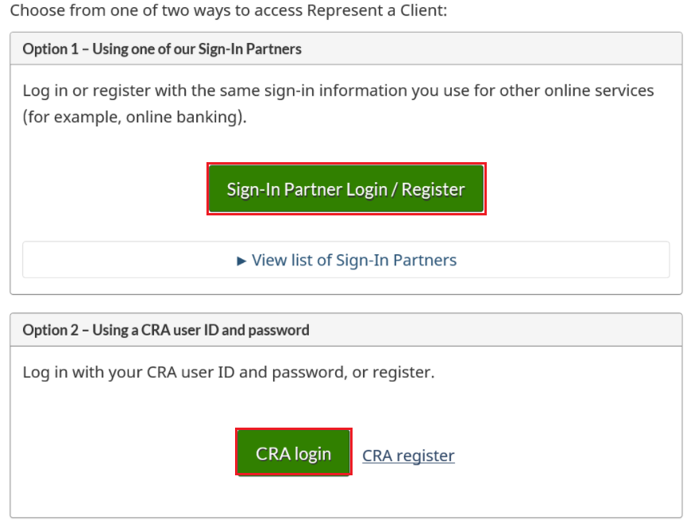
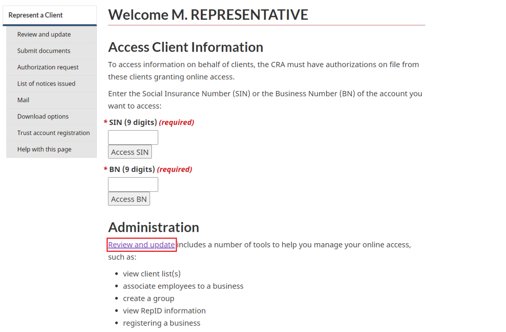
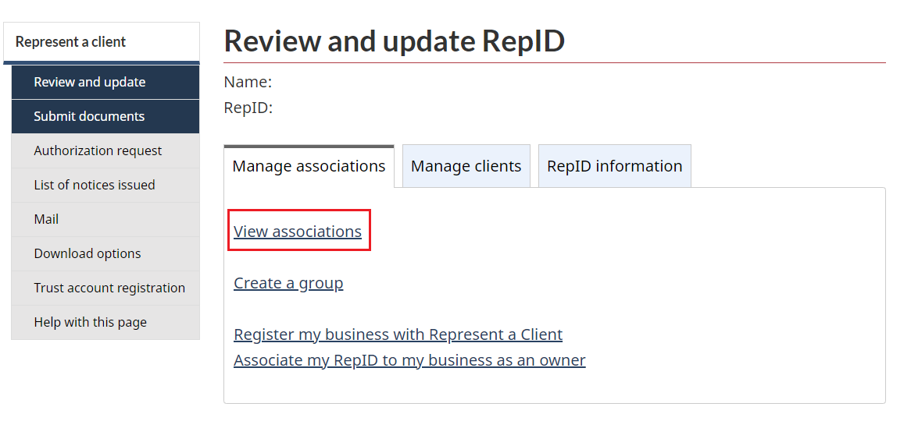
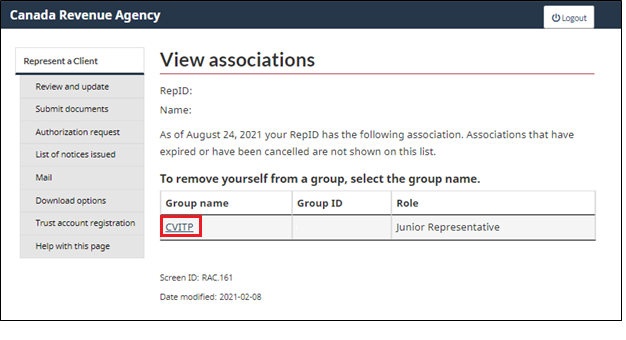
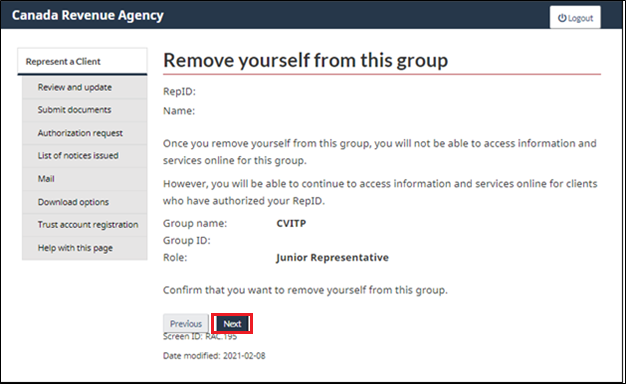
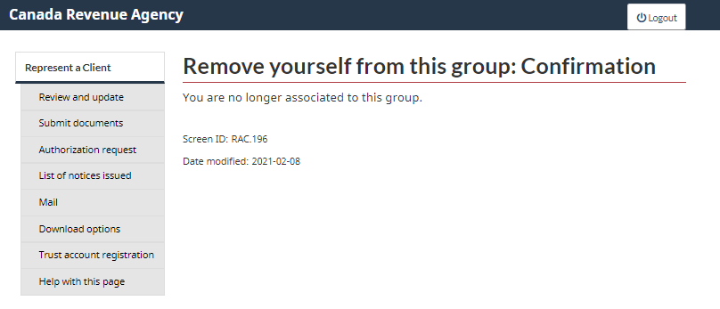

On this page
- About Represent a Client
- How to access an individual’s account
- How to confirm your affiliation with the CVITP group
About Represent a Client
If you submit an authorization request using AFR, you are authorized to access a taxpayer’s account. You can use their CRA credentials to sign in to Represent a Client and view the taxpayer’s information online for a limited period.
To be authorized on a taxpayer’s account, you must have a RepID and must have submitted an Authorization request, through UFile CVITP, for the taxpayer.
Each person can only have one RepID. If you already have a RepID, you do not need to register for a new one for CVITP purposes.
Increased access to an individual’s information through Represent a Client improves the level of service volunteers can provide. This is particularly helpful when an individual is missing information that can’t be downloaded through AFR, and/or they cannot meet confidentiality requirements over the phone.
There are several services available for representatives with Level 1 (view only) authorization. The information that is available to authorized volunteers via Represent a Client includes:
- benefits and credits overview
- Canada Child Benefit and related provincial and territorial programs payments, account balance, and statement of account
- carryover amounts and disability tax credit
- returns and notices of assessment and reassessment
- universal child care benefit payments, account balance, and statement of account
As a volunteer, you cannot view an individual’s date of birth (DOB) or address through Represent a Client.
To view an individual’s information online, choose from one of two ways to log in to Represent a Client: Sign-in Partner Login or CRA login
Text version
Choose from one of two ways to access Represent a Client:
Option 1 – Using one of our Sign-In Partners
Sign-In Partner Login / Register is highlighted
Option 2 – Using a CRA user ID and password
CRA login is highlighted
If you are using an older browser that does not support the latest security standard, you will not be able to access CRA's secure online services. For more information on tested browsers, please see Your browser - Canada.ca.
How to access an individual’s account
On the Welcome page, enter the Social Insurance Number (SIN) of the individual and click on the Access SIN button.

Text version
Access Client Information page
SIN (9 digits) (required) is highlighted
Access SIN button is highlighted
How to confirm your affiliation with the CVITP group
To confirm if you’re affiliated, click on Review and update
Text version
Access Client Information page screen
Administration topic
Review and update is highlighted
Under Manage associations, select View associations.
Text version
Review and update RepID page is displayed
View associations is highlighted
On the View associations page, you will be able to see groups that you are affiliated with.
If you wish to remove yourself from an affiliated group, you can click on the applicable group name
Text version
View associations page is displayed
CVITP is highlighted
The website will prompt you to confirm if you wish to proceed to Remove yourself from this group.
If you wish to proceed, select Next.
Text version
Remove yourself from this group page is displayed
Next button is highlighted
You will then be removed from the group you chose to remove yourself from.
Text version
Remove yourself from this group: Confirmation page is displayed